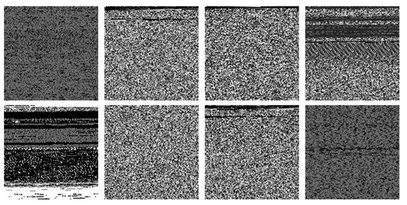

Figure 1: Converting raw bytes into images reveals the inner structure of each file. You can see that trying to hide a high-entropy key on disk won't work. Left-to-right, from the top: html, jpg, mp3, pdf, ppt, random, sxw, and txt.
Back to Article